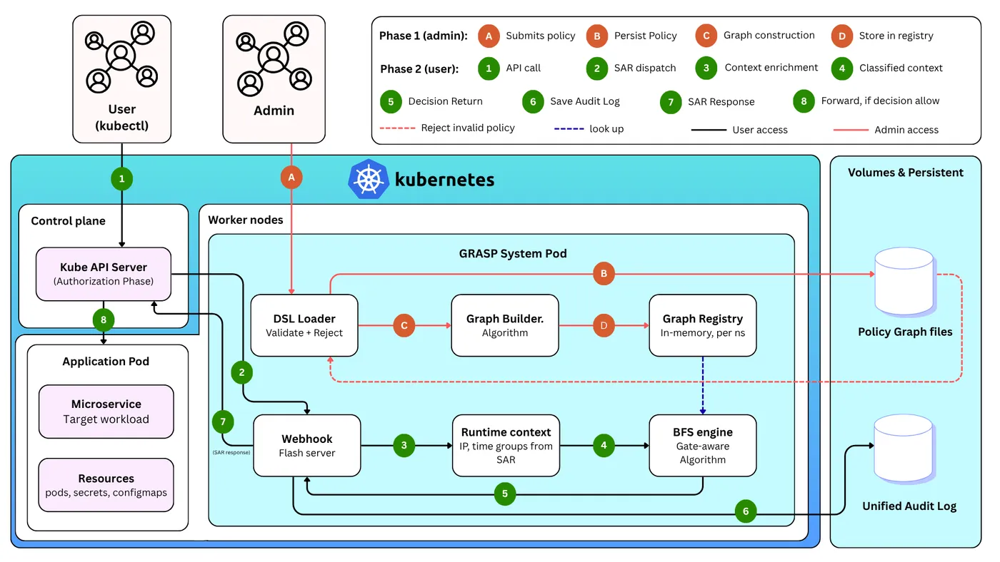
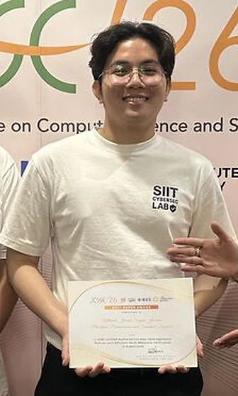
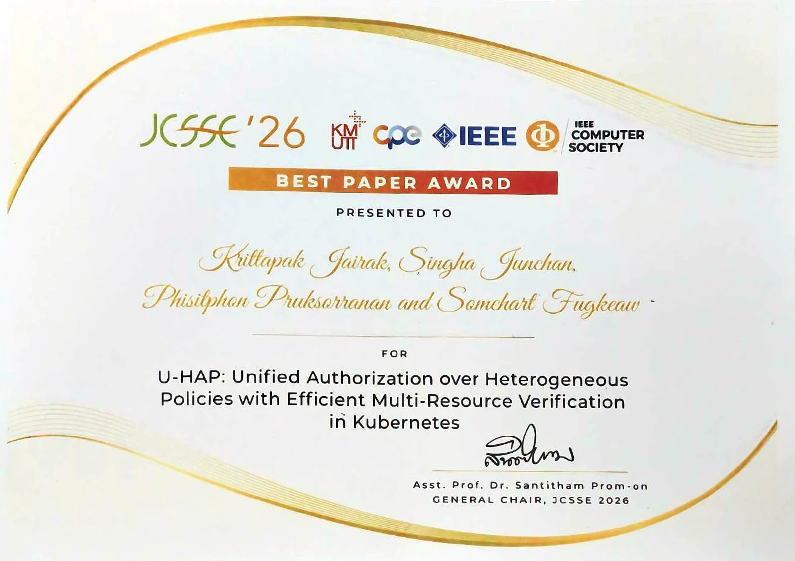

Research · second author of 4 · presenter
U-HAP: one place for every Kubernetes access rule
One model for RBAC, ABAC, ACL and deny rules, compiled ahead of time, with the same answer every time.


The gap
Kubernetes splits authorization across separate modules (RBAC, Node, webhook, ABAC) that do not know about each other, and RBAC can only grant access, never deny it. A rule that mixes models, such as "ops may delete pods in production only in office hours, unless the pod is critical", has to be stitched together, with no one place to see which rule wins. Rules get duplicated, and decisions depend on the order of checks.
What is new
Treat authorization as a compiler problem. One graph model covers RBAC, ABAC, ACL and deny rules. Policies are compiled ahead of time into indexes per resource and action, so a request only looks at rules that can apply to it. Deny always wins, so every decision is deterministic.
What I built
As second author in a team of four, I co-developed the Kubernetes authorization webhook and its policy model in Python, and checked that its decisions match Open Policy Agent on the same test requests. I presented the paper at JCSSE 2026 in Bangkok.
Result
- ~2.7× fasterpolicy updates reach a first decision vs OPA at 2,000 policies, with identical decisions
Compared with Open Policy Agent on the same policies; the method and setup are in the published paper.
Where it helps
Platform and security teams get one place to write and review every kind of access rule, and the same answer every time.
Limits and next
Rules are scoped to one namespace today. Next: cluster-wide and cross-namespace rules, recompiling only what changed, and multi-cluster deployments.
How it works
- RBAC · ABAC · ACL · deny rules
- One graph model
- Compiled into indexes
- Webhook gives a deterministic decision

Singha holding the Best Paper Award at IEEE JCSSE 2026 
Best Paper Award certificate, IEEE JCSSE 2026